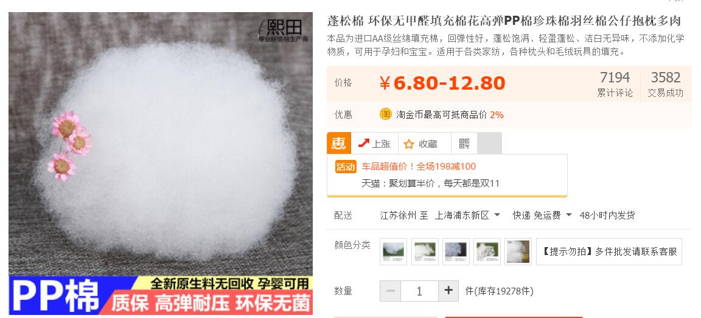
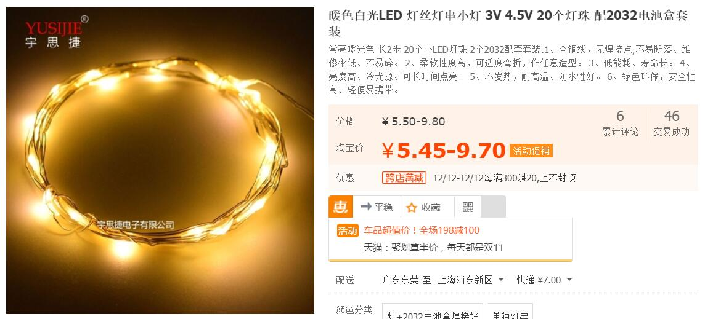
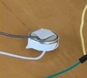
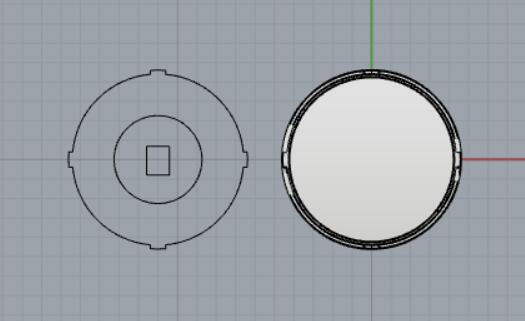
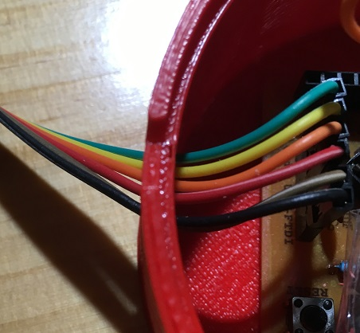

FINAL PROJECTS
Two simple but practical innovation
Cloud: I'm a firefly.
What I want to make is a cloud-like bolster that will glow when you hug it hard.
To achieve this goal, I need following basic components:
I/O board
I use the Arduino board we milled and soldered.
pressure sensor
I don't know which kind of pressure sensor is sensitive enough to sense the secondary(indirect) pressure from cotton to its surface. The pressure sensors on Taobao are a little bit expensive(compared to other electronic components.)
And this is what I got.
cotton
I bought 0.5kg cotton from Taobao. I planned to rip them off into smaller bulks. One serves as the core bulk to hold the I/O board, circuit and the pressure sensor. Then wrapped around by LED string, the core bulk will be covered by another layer of cotton.
LED string
I connected several LED together to become a string in FABLAB.
But, votage(5v) is too low to light them up. Hence, I decided to buy LED string from Taobao, which can be used under 3V votage.
Here it comes!
A hug
#^.^#
Step 1: I connected the pressure sensor to analog input and tested its performance. It's good. Then I put it into the cotton and attached it with cotton by double-side sticky tape.
The it became not so sensitive to the outside pressure. I need to hug it or hold it by hand really hard.
Step 2: Light up the LED string. You know Taobao is not reliable for most of the time. 5V can work for this LED? NO! I bought three 3V button batteries from FamilyMart and stick them together by tape.
Step 3: I wrapped the LED string around the core cotton which contained the sensor. The pic was shot before I wrapped it.
The wirings
I hugged it!
Stop! Too Hot!
I got a cup of tea from commom room. It seems very hot. Should I have a sip of it? I hate the feeling of numb tongue hurt by the hot water. In fact, water too much hot can bring damage to throat and could possibly induce esophagus cancer.
This thinking drove me to design a smart cup holder which can tell me whether it's a good timing to drink my tea.
To achieve this goal, I need following basic components:
I/O Board
In order to put the whole board into the cup holder and try me best not to make the holder too big, I connect the circuit in this way.
Temperature Sensor
The DHT11 is a basic, ultra low-cost digital temperature and humidity sensor. It uses a capacitive humidity sensor and a thermistor to measure the surrounding air.This sensor is definitely not so sensitive and acurate about the current temperature of the cup wall.
Attributes
Cup Holder
The left is a wooden holder cap that I plan to make by lasercutter. The inside small circle is the place for cup. I will fill it in Corel and grave it. The rectangle is for the temperature sensor to fit in. The right will be printed by 3D printer.
I will use the drill machine to drill three holes on the wall of this holder for three LED. Also drill some hollow space on the wall to allow the wiring connection.
Three LED
A Cup and Some Water
emmmm...
Assembly
I put the board and all the wirings into the cup holder. Saverio helped me reorganie the wires and it now looks neater.
I milled three holes for LEDs. Hole diameter: 5mm
After milling the back of the holder, I connected the I/O board and programmable board through this hole.
Here it is! I actually took away the plastic coat of this DTH11 and it become more sensitive to the change of temperature.
The material is strong enough to hold a cup filled with water.
After I poured hot water inside, the red light is on. Though it can't immediately rise to the 'turn red' temperature I set, I programmed in a way that red led will be turned on when temperature is rising. The red light will keep shining if the temperature of bottom of the cup is above 38 Celcius, which mapping to 65 Celcius real beverage temperature inside.
When temperature is lower than 20 Celcius, yellow will be on.
If it's good to drink, white led will tell you.